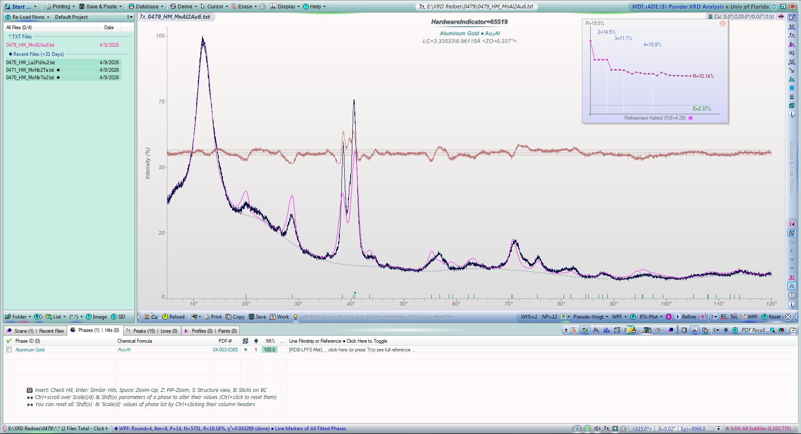
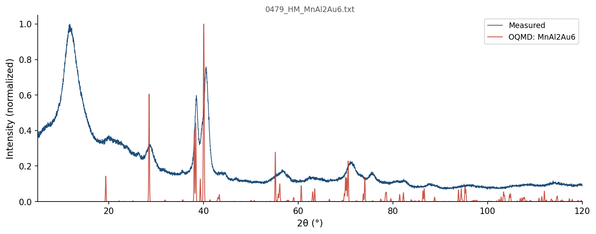
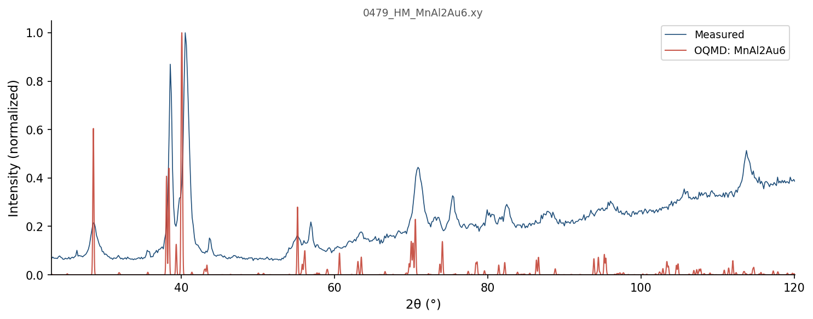

| Element | Expected (mol frac) | Measured (mol frac) | Δ (mol frac) | Δ (%) |
|---|---|---|---|---|
| Al | 0.2222 | 0.2220 | -0.0003 | -0.03% |
| Au | 0.6667 | 0.6667 | -0.0000 | -0.00% |
| Mn | 0.1111 | 0.1114 | +0.0003 | +0.03% |
270 entries in the Al-Au-Mn element system (18 on hull, 49 ICSD-tagged). Stability in meV/atom. Sorted most stable first.
| Composition | Stability (meV/atom) | ΔE (meV/atom) | ICSD | Space | Entry | CIF |
|---|---|---|---|---|---|---|
Al2Au1 |
-145 | -424.1 | ✓ | Al-Au | 10384 | CIF |
Al1Mn2 |
-36 | -252.4 | Al-Mn | 1371864 | CIF | |
Al11Mn4 |
-35 | -275.9 | ✓ | Al-Mn | 2782 | CIF |
Au2Mn1 |
-33 | -112.0 | ✓ | Au-Mn | 10784 | CIF |
Al1Mn28 |
-31 | -64.7 | Al-Mn | 2136598 | CIF | |
Al1Au1 |
-21 | -395.6 | ✓ | Al-Au | 17555 | CIF |
Au4Mn1 |
-16 | -84.1 | ✓ | Au-Mn | 18739 | CIF |
Al5Mn24 |
-16 | -167.4 | Al-Mn | 2136635 | CIF | |
Al1Au2 |
-14 | -325.1 | Al-Au | 1783805 | CIF | |
Al6Mn1 |
-13 | -172.5 | ✓ | Al-Mn | 10498 | CIF |
Al1Au4 |
-10 | -215.8 | ✓ | Al-Au | 17548 | CIF |
Al1Mn1 |
-5 | -267.6 | ✓ | Al-Mn | 27877 | CIF |
Al12Mn1 |
-5 | -97.9 | ✓ | Al-Mn | 27878 | CIF |
Al3Au8 |
-5 | -280.2 | ✓ | Al-Au | 54507 | CIF |
Al2Au6Mn1 |
-1 | -254.7 | Al-Au-Mn | 1992237 | CIF | |
Al1 |
+0 | 0.0 | Al | 1215750 | CIF | |
Au1 |
+0 | 0.0 | ✓ | Au | 636382 | CIF |
Mn1 |
+0 | 0.0 | ✓ | Mn | 7874 | CIF |
Al1Mn1 |
+0 | -267.6 | ✓ | Al-Mn | 10497 | CIF |
Au1 |
+0 | 0.3 | Au | 1214506 | CIF | |
Al1 |
+1 | 0.8 | ✓ | Al | 8100 | CIF |
Al1 |
+1 | 0.8 | Al | 1214503 | CIF | |
Al1 |
+1 | 0.9 | Al | 1485019 | CIF | |
Al1 |
+1 | 1.0 | Al | 1215661 | CIF | |
Mn1 |
+2 | 1.5 | Mn | 1214810 | CIF | |
Al1 |
+2 | 1.8 | Al | 1214592 | CIF | |
Al1Au2 |
+2 | -323.2 | ✓ | Al-Au | 10382 | CIF |
Au1 |
+2 | 2.1 | Au | 1215664 | CIF | |
Al1Au2Mn1 |
+4 | -250.5 | Al-Au-Mn | 1015833 | CIF | |
Au1 |
+4 | 3.6 | Au | 1215397 | CIF | |
Au1 |
+4 | 3.6 | Au | 1520463 | CIF | |
Au1 |
+4 | 3.6 | ✓ | Au | 594521 | CIF |
Al1Au2Mn1 |
+4 | -250.4 | ✓ | Al-Au-Mn | 10386 | CIF |
Al1Au2Mn1 |
+4 | -250.2 | Al-Au-Mn | 1015219 | CIF | |
Al1Au2Mn1 |
+4 | -249.8 | Al-Au-Mn | 515678 | CIF | |
Al1 |
+4 | 4.3 | Al | 1215839 | CIF | |
Au1 |
+4 | 4.4 | Au | 1216020 | CIF | |
Au1 |
+5 | 4.7 | ✓ | Au | 636381 | CIF |
Au1 |
+5 | 4.9 | ✓ | Au | 592562 | CIF |
Au1 |
+5 | 4.9 | ✓ | Au | 594005 | CIF |
Au1 |
+5 | 4.9 | ✓ | Au | 598514 | CIF |
Au1 |
+5 | 4.9 | ✓ | Au | 593868 | CIF |
Al1Au2 |
+5 | -319.7 | ✓ | Al-Au | 10383 | CIF |
Au1 |
+5 | 5.5 | ✓ | Au | 594522 | CIF |
Au1 |
+6 | 5.7 | ✓ | Au | 629973 | CIF |
Au1 |
+6 | 6.4 | Au | 1215307 | CIF | |
Al10Mn3 |
+10 | -236.4 | ✓ | Al-Mn | 10499 | CIF |
Au1 |
+10 | 10.0 | ✓ | Au | 2021032 | CIF |
Au1 |
+12 | 12.3 | Au | 1820962 | CIF | |
Au31Mn9 |
+13 | -76.5 | ✓ | Au-Mn | 55118 | CIF |
Au3Mn1 |
+13 | -81.1 | ✓ | Au-Mn | 2034520 | CIF |
Au3Mn1 |
+14 | -81.0 | Au-Mn | 1450449 | CIF | |
Al1 |
+14 | 14.2 | Al | 1215394 | CIF | |
Al1Au2 |
+15 | -310.2 | ✓ | Al-Au | 27652 | CIF |
Au1 |
+17 | 16.9 | ✓ | Au | 2030149 | CIF |
Au5Mn2 |
+17 | -84.7 | ✓ | Au-Mn | 10785 | CIF |
Au5Mn2 |
+17 | -84.6 | ✓ | Au-Mn | 28189 | CIF |
Au1 |
+18 | 18.3 | Au | 1522147 | CIF | |
Au1 |
+18 | 18.3 | Au | 1522144 | CIF | |
Al9Au25 |
+19 | -254.5 | Al-Au | 1339362 | CIF | |
Al1 |
+20 | 20.2 | Al | 1216017 | CIF | |
Au1 |
+21 | 21.0 | Au | 1215218 | CIF | |
Au1 |
+23 | 23.0 | Au | 1215129 | CIF | |
Al3Mn2 |
+23 | -248.1 | ✓ | Al-Mn | 27876 | CIF |
Au3Mn1 |
+25 | -69.4 | Au-Mn | 301811 | CIF | |
Au1 |
+28 | 28.0 | Au | 1214684 | CIF | |
Al1Mn1 |
+28 | -239.4 | Al-Mn | 336886 | CIF | |
Al1 |
+33 | 32.6 | ✓ | Al | 2029852 | CIF |
Al1 |
+33 | 32.8 | Al | 1215304 | CIF | |
Al1 |
+33 | 33.1 | Al | 1215215 | CIF | |
Al1Au1Mn1 |
+35 | -253.6 | Al-Au-Mn | 1283229 | CIF | |
Al1Mn1 |
+36 | -231.7 | Al-Mn | 1217536 | CIF | |
Al1Au3 |
+37 | -222.9 | Al-Au | 1782355 | CIF | |
Au3Mn1 |
+38 | -56.9 | Au-Mn | 322097 | CIF | |
Al1Au2Mn1 |
+39 | -215.0 | Al-Au-Mn | 1018934 | CIF | |
Al5Au13 |
+40 | -243.8 | Al-Au | 1341022 | CIF | |
Au3Mn1 |
+42 | -53.0 | Au-Mn | 1784806 | CIF | |
Au1 |
+42 | 42.0 | Au | 1214595 | CIF | |
Al1Mn1 |
+45 | -223.0 | Al-Mn | 1218117 | CIF | |
Al1Au2Mn1 |
+45 | -209.2 | Al-Au-Mn | 1017356 | CIF | |
Al1Au3 |
+48 | -212.5 | Al-Au | 1794439 | CIF | |
Al1Au2Mn1 |
+49 | -205.3 | Al-Au-Mn | 1013636 | CIF | |
Mn1 |
+50 | 50.2 | Mn | 1214988 | CIF | |
Al1Au3 |
+51 | -209.5 | Al-Au | 301902 | CIF | |
Mn1 |
+51 | 51.2 | ✓ | Mn | 7587 | CIF |
Mn1 |
+52 | 51.6 | Mn | 1214899 | CIF | |
Mn1 |
+52 | 52.5 | Mn | 1215344 | CIF | |
Mn1 |
+53 | 52.5 | Mn | 1215434 | CIF | |
Al3Mn1 |
+54 | -208.5 | Al-Mn | 299318 | CIF | |
Al1Au3 |
+54 | -206.0 | Al-Au | 319411 | CIF | |
Al1 |
+56 | 55.7 | Al | 1214770 | CIF | |
Al1 |
+56 | 55.7 | Al | 1577399 | CIF | |
Al1Au1 |
+58 | -337.3 | Al-Au | 1782611 | CIF | |
Mn1 |
+59 | 58.6 | Mn | 1216060 | CIF | |
Au3Mn1 |
+59 | -35.4 | Au-Mn | 312353 | CIF | |
Mn1 |
+59 | 59.5 | Mn | 1215255 | CIF | |
Au1 |
+60 | 59.8 | Au | 2066485 | CIF | |
Al1Au2 |
+61 | -263.8 | Al-Au | 1914407 | CIF | |
Al1 |
+62 | 61.6 | Al | 1214859 | CIF | |
Au1 |
+62 | 62.1 | ✓ | Au | 2031487 | CIF |
Al1 |
+64 | 64.2 | Al | 1489260 | CIF | |
Al3Au5 |
+64 | -278.4 | Al-Au | 1795238 | CIF | |
Al1Mn1 |
+65 | -203.1 | Al-Mn | 2083177 | CIF | |
Au1 |
+66 | 65.8 | Au | 1214862 | CIF | |
Al3Mn1 |
+67 | -194.9 | Al-Mn | 1787092 | CIF | |
Au1 |
+68 | 68.0 | Au | 1038224 | CIF | |
Au1 |
+68 | 68.3 | Au | 2066503 | CIF | |
Au1Mn1 |
+70 | -14.1 | Au-Mn | 1784265 | CIF | |
Au1Mn1 |
+70 | -13.7 | ✓ | Au-Mn | 19149 | CIF |
Al1Au3Mn2 |
+70 | -130.2 | Al-Au-Mn | 1558982 | CIF | |
Al1Au3Mn2 |
+70 | -130.2 | Al-Au-Mn | 1567937 | CIF | |
Au1Mn1 |
+71 | -13.4 | Au-Mn | 306598 | CIF | |
Au1Mn1 |
+71 | -12.9 | ✓ | Au-Mn | 19150 | CIF |
Au1 |
+74 | 73.5 | Au | 1214773 | CIF | |
Al1Au2Mn1 |
+74 | -180.3 | Al-Au-Mn | 1042861 | CIF | |
Al8Mn5 |
+75 | -196.2 | ✓ | Al-Mn | 2052217 | CIF |
Au3Mn1 |
+76 | -18.3 | Au-Mn | 1782255 | CIF | |
Au3Mn1 |
+76 | -18.2 | Au-Mn | 346583 | CIF | |
Al1Au3 |
+76 | -183.7 | Al-Au | 343897 | CIF | |
Al3Au2 |
+77 | -335.2 | Al-Au | 1797246 | CIF | |
Al1 |
+79 | 78.7 | Al | 1214948 | CIF | |
Al1 |
+79 | 78.7 | Al | 1280406 | CIF | |
Al1Au1Mn1 |
+81 | -207.3 | Al-Au-Mn | 1567944 | CIF | |
Al1Au1Mn1 |
+81 | -207.3 | Al-Au-Mn | 1558989 | CIF | |
Al5Mn1 |
+83 | -109.7 | Al-Mn | 1450638 | CIF | |
Mn1 |
+83 | 83.2 | Mn | 1520892 | CIF | |
Mn1 |
+83 | 83.4 | Mn | 1214543 | CIF | |
Mn1 |
+83 | 83.4 | ✓ | Mn | 676149 | CIF |
Al5Mn2 |
+84 | -191.6 | Al-Mn | 1796782 | CIF | |
Au1 |
+84 | 84.0 | Au | 2066494 | CIF | |
Mn1 |
+85 | 85.2 | Mn | 1215701 | CIF | |
Au1Mn1 |
+87 | 2.9 | Au-Mn | 338140 | CIF | |
Mn1 |
+89 | 89.2 | ✓ | Mn | 2031497 | CIF |
Al1Au3 |
+91 | -169.2 | Al-Au | 312444 | CIF | |
Al1 |
+96 | 95.5 | Al | 1521877 | CIF | |
Al1 |
+96 | 95.5 | Al | 1521872 | CIF | |
Al1 |
+96 | 95.5 | ✓ | Al | 2015051 | CIF |
Al1 |
+96 | 95.6 | Al | 1215126 | CIF | |
Au1 |
+99 | 98.7 | Au | 1972139 | CIF | |
Al1 |
+103 | 103.4 | Al | 1477121 | CIF | |
Al1Au1 |
+109 | -286.7 | Al-Au | 325947 | CIF | |
Mn1 |
+111 | 110.7 | Mn | 1214632 | CIF | |
Al1Au1Mn1 |
+114 | -174.4 | Al-Au-Mn | 1567943 | CIF | |
Al1Au1Mn1 |
+114 | -174.4 | Al-Au-Mn | 1558988 | CIF | |
Al3Mn5 |
+115 | -141.1 | Al-Mn | 1782965 | CIF | |
Al1Mn1 |
+116 | -151.8 | Al-Mn | 1228002 | CIF | |
Au1 |
+116 | 116.2 | Au | 1520092 | CIF | |
Au1 |
+118 | 118.0 | Au | 1215040 | CIF | |
Al3Mn1 |
+118 | -143.6 | Al-Mn | 345020 | CIF | |
Au1 |
+119 | 119.0 | Au | 1972138 | CIF | |
Au1 |
+120 | 119.5 | Au | 2066512 | CIF | |
Al1Mn1 |
+122 | -145.7 | Al-Mn | 2121094 | CIF | |
Al1Mn1 |
+122 | -145.7 | Al-Mn | 2084721 | CIF | |
Au1 |
+124 | 124.5 | Au | 1280361 | CIF | |
Au1 |
+125 | 124.8 | Au | 1214951 | CIF | |
Al3Mn1 |
+127 | -135.1 | Al-Mn | 320534 | CIF | |
Al2Au3 |
+127 | -225.9 | Al-Au | 425531 | CIF | |
Al3Mn2 |
+128 | -142.8 | Al-Mn | 1797270 | CIF | |
Al1 |
+130 | 129.7 | Al | 1215037 | CIF | |
Al1Au1 |
+131 | -264.8 | Al-Au | 1217501 | CIF | |
Al2Au1 |
+135 | -288.8 | Al-Au | 1520565 | CIF | |
Al1Mn1 |
+136 | -132.0 | Al-Mn | 2121490 | CIF | |
Al1Mn1 |
+136 | -131.7 | Al-Mn | 2085778 | CIF | |
Al3Mn1 |
+140 | -121.5 | Al-Mn | 2082361 | CIF | |
Au1 |
+142 | 142.1 | Au | 1972137 | CIF | |
Al1Au1 |
+143 | -252.3 | Al-Au | 1104049 | CIF | |
Al1Mn1 |
+145 | -122.8 | Al-Mn | 2080361 | CIF | |
Al1 |
+147 | 147.5 | Al | 1485619 | CIF | |
Mn1 |
+148 | 148.4 | Mn | 1215166 | CIF | |
Al1Au1 |
+149 | -246.3 | Al-Au | 304863 | CIF | |
Al1Au1 |
+149 | -246.2 | ✓ | Al-Au | 10381 | CIF |
Al1Au1 |
+149 | -246.2 | Al-Au | 1522331 | CIF | |
Al3Mn1 |
+150 | -111.6 | Al-Mn | 2121398 | CIF | |
Al3Mn1 |
+151 | -110.8 | Al-Mn | 2086050 | CIF | |
Mn1 |
+152 | 151.5 | Mn | 1521955 | CIF | |
Mn1 |
+152 | 151.5 | Mn | 1521952 | CIF | |
Mn1 |
+152 | 151.7 | ✓ | Mn | 2025386 | CIF |
Al1Mn1 |
+153 | -115.0 | Al-Mn | 2082061 | CIF | |
Al1Mn3 |
+153 | -55.5 | ✓ | Al-Mn | 22372 | CIF |
Al1 |
+155 | 154.6 | Al | 1487142 | CIF | |
Au1 |
+156 | 156.0 | Au | 1215753 | CIF | |
Al3Mn1 |
+156 | -105.7 | Al-Mn | 2080745 | CIF | |
Al1Mn3 |
+157 | -51.8 | Al-Mn | 309992 | CIF | |
Al1Au1 |
+158 | -237.4 | Al-Au | 336405 | CIF | |
Al3Au1Mn2 |
+160 | -178.1 | Al-Au-Mn | 1567945 | CIF | |
Al3Au1Mn2 |
+160 | -178.1 | Al-Au-Mn | 1558990 | CIF | |
Au1 |
+162 | 161.6 | Au | 1215575 | CIF | |
Al1 |
+162 | 161.9 | Al | 1485144 | CIF | |
Al1Mn3 |
+162 | -46.2 | Al-Mn | 2082211 | CIF | |
Al1Mn3 |
+163 | -45.0 | Al-Mn | 2085914 | CIF | |
Al1Mn3 |
+163 | -44.9 | Al-Mn | 2121318 | CIF | |
Al1Au2Mn1 |
+164 | -90.1 | Al-Au-Mn | 1042193 | CIF | |
Al1Au2Mn1 |
+165 | -89.0 | Al-Au-Mn | 743033 | CIF | |
Mn1 |
+168 | 167.7 | Mn | 1215879 | CIF | |
Al1Au1 |
+169 | -226.7 | Al-Au | 1227967 | CIF | |
Al2Au1Mn1 |
+175 | -177.5 | Al-Au-Mn | 511461 | CIF | |
Al1Mn1 |
+178 | -89.9 | Al-Mn | 2082511 | CIF | |
Al1 |
+182 | 182.3 | Al | 1214681 | CIF | |
Au1 |
+184 | 184.0 | Au | 1972136 | CIF | |
Al1Mn3 |
+185 | -23.1 | Al-Mn | 299450 | CIF | |
Al1Mn3 |
+185 | -23.1 | Al-Mn | 2121078 | CIF | |
Al1Mn3 |
+186 | -21.9 | Al-Mn | 2080609 | CIF | |
Al1Mn2 |
+187 | -65.3 | Al-Mn | 1590862 | CIF | |
Al1Mn1 |
+190 | -77.4 | Al-Mn | 326428 | CIF | |
Al3Au1 |
+198 | -120.6 | Al-Au | 347472 | CIF | |
Al1Mn3 |
+199 | -9.2 | Al-Mn | 344888 | CIF | |
Al1Mn3 |
+199 | -8.9 | Al-Mn | 320402 | CIF | |
Au1 |
+201 | 200.6 | Au | 1215842 | CIF | |
Al3Au1 |
+203 | -115.1 | Al-Au | 298334 | CIF | |
Au1Mn1 |
+211 | 127.0 | Au-Mn | 327682 | CIF | |
Al1Au1Mn1 |
+211 | -77.7 | Al-Au-Mn | 946778 | CIF | |
Al1Au1Mn1 |
+214 | -74.7 | Al-Au-Mn | 1567940 | CIF | |
Al1Au1Mn1 |
+214 | -74.7 | Al-Au-Mn | 1558985 | CIF | |
Au1 |
+224 | 223.6 | Au | 1972135 | CIF | |
Al1Au1Mn2 |
+240 | 13.4 | Al-Au-Mn | 471877 | CIF | |
Al2Mn3 |
+242 | -16.9 | Al-Mn | 1285184 | CIF | |
Al2Mn3 |
+242 | -16.5 | Al-Mn | 1250595 | CIF | |
Al1Au2Mn1 |
+245 | -9.0 | Al-Au-Mn | 1047015 | CIF | |
Al1Au1Mn2 |
+251 | 24.2 | Al-Au-Mn | 743820 | CIF | |
Au1Mn2 |
+251 | 195.2 | ✓ | Au-Mn | 10783 | CIF |
Au1Mn1 |
+256 | 171.9 | Au-Mn | 1228161 | CIF | |
Au1Mn3 |
+259 | 216.7 | Au-Mn | 322895 | CIF | |
Au1Mn2 |
+265 | 209.2 | Au-Mn | 1800557 | CIF | |
Al3Au1 |
+269 | -49.5 | Al-Au | 322986 | CIF | |
Au1 |
+272 | 272.2 | Au | 1972134 | CIF | |
Al1 |
+280 | 279.6 | Al | 1215572 | CIF | |
Al3Au1 |
+308 | -9.7 | Al-Au | 308869 | CIF | |
Al2Au1Mn1 |
+314 | -38.4 | Al-Au-Mn | 1142571 | CIF | |
Al2Au1Mn1 |
+314 | -38.4 | Al-Au-Mn | 1114438 | CIF | |
Al1Au1Mn1 |
+318 | 29.4 | Al-Au-Mn | 942561 | CIF | |
Au1Mn1 |
+337 | 252.6 | Au-Mn | 1105783 | CIF | |
Al3Mn1 |
+341 | 78.9 | Al-Mn | 309860 | CIF | |
Al1Au1 |
+344 | -51.4 | Al-Au | 1224481 | CIF | |
Au1Mn2 |
+344 | 288.5 | Au-Mn | 1590922 | CIF | |
Au1Mn3 |
+345 | 302.8 | ✓ | Au-Mn | 19340 | CIF |
Al2Au1 |
+345 | -79.3 | Al-Au | 1231453 | CIF | |
Au1Mn3 |
+346 | 304.3 | Au-Mn | 311555 | CIF | |
Al1Au1 |
+352 | -43.4 | Al-Au | 1218287 | CIF | |
Al2Mn1 |
+357 | 83.1 | Al-Mn | 1416661 | CIF | |
Au2Mn1 |
+361 | 249.2 | Au-Mn | 1594790 | CIF | |
Mn1 |
+367 | 366.8 | Mn | 1215077 | CIF | |
Al1Mn5 |
+377 | 213.7 | Al-Mn | 1603482 | CIF | |
Al1Au1Mn1 |
+389 | 100.3 | Al-Au-Mn | 902978 | CIF | |
Al2Mn1 |
+410 | 136.0 | Al-Mn | 1590043 | CIF | |
Au1Mn3 |
+415 | 372.8 | Au-Mn | 347381 | CIF | |
Al1Au2 |
+425 | 100.3 | Al-Au | 1594780 | CIF | |
Mn1 |
+430 | 430.2 | Mn | 1215790 | CIF | |
Au1Mn3 |
+436 | 394.4 | Au-Mn | 301013 | CIF | |
Al1 |
+501 | 500.8 | Al | 1215928 | CIF | |
Al2Mn1 |
+503 | 229.7 | Al-Mn | 1231488 | CIF | |
Al2Mn3 |
+506 | 247.2 | Al-Mn | 425566 | CIF | |
Mn1 |
+506 | 505.9 | Mn | 1214721 | CIF | |
Al2Au1 |
+548 | 124.4 | Al-Au | 1590094 | CIF | |
Au1 |
+560 | 560.1 | Au | 1215931 | CIF | |
Mn1 |
+590 | 589.9 | ✓ | Mn | 2013164 | CIF |
Al1Mn1 |
+633 | 365.7 | Al-Mn | 1243887 | CIF | |
Mn1 |
+661 | 661.2 | Mn | 1215612 | CIF | |
Al1Mn1 |
+671 | 403.7 | Al-Mn | 1104529 | CIF | |
Au1 |
+719 | 719.1 | Au | 1215486 | CIF | |
Al1Mn2 |
+724 | 472.0 | Al-Mn | 1416662 | CIF | |
Al1 |
+747 | 746.7 | Al | 1215483 | CIF | |
Au1Mn1 |
+803 | 719.3 | Au-Mn | 1218481 | CIF | |
Al2Au1 |
+974 | 550.4 | Al-Au | 1238152 | CIF | |
Al1Mn1 |
+1025 | 757.5 | Al-Mn | 1224516 | CIF | |
Au2Mn1 |
+1262 | 1150.1 | Au-Mn | 1241254 | CIF | |
Mn1 |
+1355 | 1355.5 | Mn | 1215523 | CIF | |
Al1Mn1 |
+1530 | 1262.6 | Al-Mn | 1218322 | CIF | |
Au1Mn2 |
+1644 | 1588.4 | Au-Mn | 1241253 | CIF | |
Mn1 |
+1665 | 1664.5 | Mn | 1215968 | CIF | |
Al2Mn1 |
+1946 | 1672.2 | Al-Mn | 1237135 | CIF |

| Phase | Formula | Crystal System | Space Group | Lattice Parameters (Å / °) | Bragg-R |
|---|---|---|---|---|---|
| Germanium Tungsten | Ge2W | Tetragonal | I4/mmm (139) | a = 3.3084(64) c = 9.004(18) | 14.79% |


19 known superconductor(s) in the MnAl2Au6 element system. Sorted by Tc descending. ■ closest composition
| Compound | Formula | Tc (K) | Reference |
|---|---|---|---|
| Al | Al1 |
1.80 | 10.1103/PhysRevLett.73.1412 |
| Al1 | Al1 |
1.30 | Search |
| Al | Al1 |
1.18 | 10.1103/PhysRevLett.35.104 |
| Al | Al1 |
1.18 | 10.1103/PhysRev.148.353 |
| Al | Al1 |
1.18 | 10.1103/PhysRev.165.522 |
| Al1 | Al1 |
1.18 | 10.1103/PhysRev.138.A1428 |
| Al1 | Al1 |
1.17 | Search |
| Al | Al1 |
1.16 | 10.1103/PhysRev.114.676 |
| Al | Al1 |
1.16 | Search |
| Al | Al1 |
1.16 | Search |
| Al1Au4 | Al1Au4 |
0.70 | Search |
| Al1-xMnx | Al99.925Mn0.075 |
0.70 | Search |
| Al1-xMnx | Al0.999Mn0.001 |
0.60 | Search |
| Al1Au4 | Al1Au4 |
0.40 | Search |
| (Au,Al) | Al0.14Au0.86 |
0.39 | Search |
| Al1-xMnx | Al0.998Mn0.002 |
0.26 | Search |
| Al2Au1 | Al2Au1 |
0.10 | Search |
| (Au,Al) | Al0.08Au0.92 |
0.09 | Search |
| (Au,Al) | Al0.05Au0.95 |
0.01 | Search |